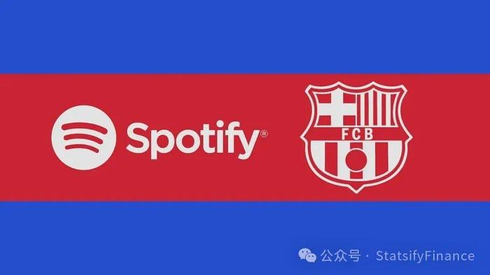
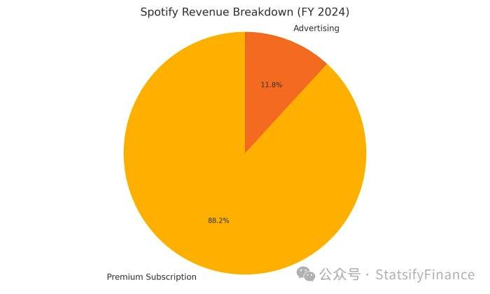
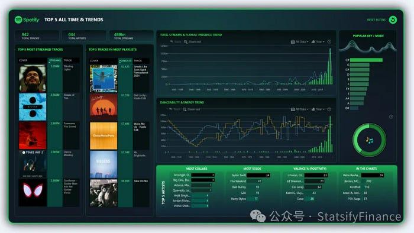
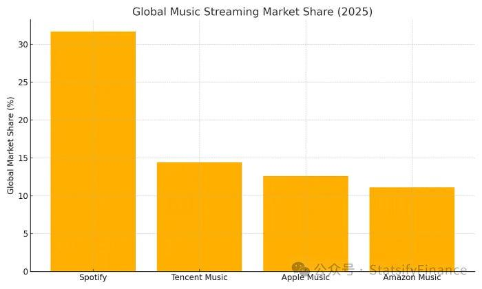

Founded in Sweden in 2006, Spotify is the world's largest music streaming platform. Its core product offers seamless access to music, podcasts, and audiobooks, with personalized recommendations, shareable playlists, and multi-device support. The experience is free (ad-supported) or paid (subscription-based), depending on the tier.

But in a fiercely competitive market, how did Spotify carve out global dominance? The answer lies in how it thinks like a data company, not just a music one.
Revenue Model: Subscriptions First, Ads Second
Spotify's business is built on two pillars: subscriptions and ads. In 2024, subscriptions generated roughly 87% of total revenue (€13.8 billion), while ads contributed about 12% (€1.85 billion). Free-tier users may not pay, but their behavioral data trains Spotify's algorithms and forms the pipeline for future conversions.

Spotify Simplified Income Statement: Orange section represents advertising revenue; Yellow section represents subscription revenue.
However, nearly 60% of that income (€10 billion) was paid out in royalties to rights holders. That makes it clear: Spotify's success hinges not just on revenue growth, but on retaining users, maximizing listening time, and running lean infrastructure.
They've hit a turning point. In 2024, Spotify recorded a €114 million profit. This came not from explosive revenue but from operational leverage:
- Infrastructure costs dropped thanks to Scio, their self-built data API with elastic scheduling, which reduced wasted compute during peak loads.
- Ad efficiency rose after launching Spotify Ad Exchange, boosting ad fill rates from 78% to 92%.
- ARPU improved as HiFi and Duo tiers lifted average revenue per user from €4.4 to €4.7, with churn held flat.
Data is what powers all three of these moves.
The Data Pipeline: Real-Time Feedback at Scale
Picture this: You stream Bohemian Rhapsody at midnight. That single action spawns an Avro event with over 60 data points — track ID, volume level, device type, and whether you're on Bluetooth or cellular. On a peak day, Spotify handles trillions of such events.
These events go to Kafka queues, then flow into Google Pub/Sub for cloud processing. End-to-end latency: 1–3 seconds. In practical terms, by the time you hit "next track," Spotify already knows you were getting bored.
On the backend, a unified processing engine handles both real-time and batch data. This allows the same system to:
- Push real-time homepage updates in under 2 minutes.
- Aggregate petabytes of logs for annual retrospectives.
At the heart of this system is Spotify's recommendation engine, which operates like three fishing nets:
- Collaborative filtering breaks down 100 million users and 100 million songs into 100-dimensional vectors, surfacing your likely favorites based on shared patterns.
- Content-based filtering analyzes audio features (like Mel spectrograms) with convolutional neural nets and digests lyrics with NLP. Within 15 minutes of upload, new songs get fully tagged.
- Social graphs pick up shared listening habits, playlist overlaps, and editorial highlights to inject serendipity and range.

Together, these nets generate about 60,000 candidate tracks, which then get ranked by a Transformer model that balances completion rate, skip rate, and save rate to pick 30 songs for your Daily Mix.
Every tap — fast forward, like, skip — feeds back into the system. The user vector updates in real time. This feedback loop can raise long-tail song completion by 9% and boost conversion from free to paid users by 1.4%. A seemingly small change, but across hundreds of millions of users, it translates into tens of millions of euros.
Why Spotify Stays Ahead

Current approximate market share distribution in the streaming music market
Spotify doesn't just use data — it owns the entire stack: from ingestion pipelines to model training, to experimentation platforms. That vertical control is rare in the streaming space. It lets them:
- React fast to user behavior.
- Run controlled experiments at scale.
- Give artists detailed insights into their audience — feeding back into the ecosystem.
Their open creator ecosystem and precision algorithms are what differentiate Spotify from other platforms locked into content deals or recommendation black boxes.
Future Trends: Where the Music is Headed
Spotify is already betting on the next frontier of music:
- Generative AI: Tools now let users describe a mood or scene to instantly generate a custom playlist. Spotify is internally testing AI Playlists with prompt-based recommendations.
- On-chain royalties: Smart contracts allow royalties to be split and distributed automatically. Future music rights could be bought in micro-shares, allowing individuals to invest in 0.01% of a song's earnings.
- Immersive live shows: VR/AR-powered concerts with NFT ticketing are creating new monetization channels and brand opportunities beyond physical venues.
All of these trends challenge the boundaries of what it means to "stream" music. But Spotify's bet is clear: own the data, and you own the future of sound.